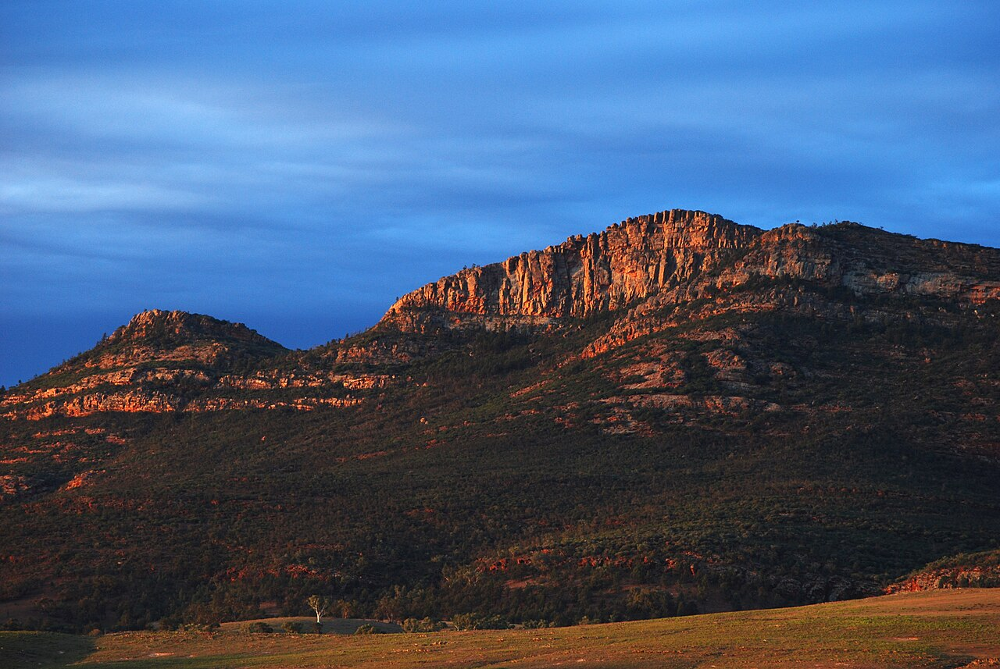

Ikara-Flinders Ranges from Wilpena Pound · 5-day family itinerary
Five spring days from Adelaide for an eleven-year-old and an eight-year-old, based at Wilpena Pound. NPWS says the main road through the park to Wilpena is sealed, and the best walks start at Wilpena, so the core plan suits an ordinary hire car; the gorge drives go in only if the morning road report says your car can take them.

Photo: Peripitus, Wilpena Pound - moody sunset, CC BY-SA 3.0, via Wikimedia Commons. Photographed in October 2008; this plan runs in late September.

Checked before you commit
This illustrative route drives from Adelaide to Ikara-Flinders Ranges National Park, which National Parks and Wildlife Service South Australia (NPWS) puts about 450 kilometres north of Adelaide, stays four nights at Wilpena Pound and drives back. The NPWS park page and closures list, the South Australian outback roads report, CFS fire danger season dates and Department for Education term dates were read on 19 November 2026. Nothing was booked.
One base, one sealed road in. NPWS says to drive to Hawker, follow the signs to Wilpena, and that the main road through the park and into Wilpena Pound is sealed. Every walk on Days 2 and 4 starts at Wilpena or beside the Hawker–Blinman Road. The only unsealed driving is optional, on Day 3, and depends on the road report.
One long walk, then shorter ones. The longest is the Wangara Lookout hike on Day 2, which NPWS lists at 3 hours return and 7.2 kilometres to the lower lookout. Day 4 is Arkaroo Rock, 3 kilometres and about 2 hours, plus a 1-kilometre self-guided walk at Old Wilpena Station. Days 1 and 5 are mostly driving.
We didn’t check accommodation, a hire car, the drive time from Adelaide, guided tours or the 2027 spring events program. The A$14.40 vehicle entry fee is as NPWS showed it on 19 November 2026, and NPWS says to pay it before you arrive. A booking-hub link doesn’t hold a room, a car or a tour.
Planning boundary: dates are illustrative; the worked example runs Monday 27 September to Friday 1 October 2027, five days counted from the drive up to the drive home. The Department for Education lists Term 3 2027 ending on 24 September and Term 4 starting on 11 October, so these are spring school holiday days. NPWS says April to October is the most comfortable time for walking.
On 18 November 2026 the outback roads report listed the two gorge roads in this park, Brachina Gorge Road and Bunyeroo Valley Road, as 4WD only, although the NPWS park page says all public roads take high-clearance two-wheel-drive vehicles. Alfred doesn’t read road reports, fire danger ratings or park alerts. A booking-hub link doesn’t prove a booking.
Route and family-coordination brief
Party: two adults, an eleven-year-old and an eight-year-old. Base: Wilpena Pound for four nights; Discovery Resorts – Wilpena Pound says it is the only accommodation inside the park, with resort rooms, glamping tents and a campground. Pace: walks in the morning, rest in the afternoon. Assumption: a two-wheel-drive hire car collected in Adelaide; we didn’t check hire terms, rooms or fares.
Road rule: NPWS says unsealed roads in the park have changing surfaces and may be affected by weather, and points to the Department for Infrastructure and Transport (DIT) for current conditions. DIT’s report, issued 10.48 am on 18 November 2026, put Brachina Gorge Road and Bunyeroo Valley Road under “4WD Only (under 3 tonne / no towing)”, saying to follow wheel tracks through creek beds where sections of road are missing. The report reissued at 7.05 pm on 19 November 2026 still listed both.
Sign rule: the same DIT report said that, because of a satellite outage and flood damage, some outback road signs were not updating automatically, and that signs with mobile coverage carry a QR code for the latest conditions. NPWS says mobile coverage in the park can be patchy, especially in low-lying areas. Our inference: read the report at Wilpena before you drive, not at the gorge turn-off.
Fire rule: NPWS says the park is closed on days of Catastrophic Fire Danger, may also be closed on Extreme days, and that all walking trails close on Catastrophic days. The CFS fire danger season for the Flinders district ran from 15 October 2026 in the 2026–27 season and from 1 November 2025 the year before; the 2027–28 dates weren’t published when we looked.
Walking rule: NPWS asks walkers to carry at least four litres of water each for walks longer than two hours, to sign the Bushwalkers Register at the Wilpena trailhead for walks of three hours or more, to tell someone their route, and to finish before dark. It says the maps on its website are a guide only and to collect maps at the Wilpena Visitor Centre.
Left out: St Mary Peak, which NPWS says the Adnyamathanha people would prefer visitors not climb; the 9-hour Malloga Falls hike; Wilkawillina Gorge, 45 kilometres north-east of Wilpena; camping; and the Heysen Trail. Yura Mulka (Sacred Canyon) is restricted access, visited only on an Adnyamathanha guided tour, so it appears as a bookable option, not a drop-in stop.
In Alfred, while the trip is still Planning, you can keep or change the hotel and then the flights Alfred picked, and browse the activity and meal carousels. Their Like toggles aren’t saved, so a like isn’t a record of a decision. We did not test whether city search offers Wilpena Pound or Hawker, or how Alfred handles a drive-only trip.
Day 1 — Drive from Adelaide to Wilpena Pound, then read the road report
Leave Adelaide early with the hire car. NPWS gives several routes to Hawker, then says to follow the signs to Wilpena, about 450 kilometres in all by its figure. We didn’t time the drive, so treat it as most of the day, with stops. Pay the A$14.40 vehicle entry online before you go; NPWS says to pay before you arrive.
NPWS puts the Arkaroo Rock car park 17 kilometres south of Wilpena on the Hawker–Blinman Road, so by our reading you pass it on the way in; leave it for Day 4, when the morning light suits the paintings. Check in at Wilpena, then call at the Wilpena Pound Visitor Information Centre, open 8 am to 5 pm, for walking maps; NPWS says its website maps are a guide only.
Read the DIT outback roads report and the NPWS closures page for anything new, and check the CFS fire danger rating for the Flinders district for the next few days.
Fallback: if you arrive after 5 pm, collect maps first thing tomorrow; the Day 2 walk starts at the same visitor centre complex.
Live-check: the road report; NPWS alerts; the fire danger rating; your check-in time.
Day 2 — Into Wilpena Pound to Hills Homestead and Wangara Lookout
Ask at the visitor centre for the start; the NPWS page describes the route but doesn’t name the trailhead. Sign the Bushwalkers Register at the Wilpena trailhead: NPWS asks for it on walks of three hours or more, and this one is listed at 3 hours return, 7.2 kilometres, to the lower lookout. Carry at least four litres of water each, as NPWS advises for walks of more than two hours, plus hats and sunscreen.
The track follows Wilpena Creek through river red gums and native pines to Hills Homestead, which NPWS describes as pioneering heritage inside the pound. The lower Wangara Lookout is 300 metres on; the upper lookout is another 300 metres, making 7.8 kilometres and about 3 hours 30 minutes. If legs are tired at the homestead, turn back there: NPWS lists that walk alone as 6.6 kilometres, about 2 hours.
Rest at Wilpena. Late in the day, walk the Spirit of Endurance Trail, about 1 hour 30 minutes return, which NPWS says follows the photographs Harold Cazneaux took here in 1937 and builds on the Cazneaux Tree walk.
Fallback: NPWS says the park is closed on Catastrophic Fire Danger days, with every walking trail shut, and may close on Extreme days. If either is forecast, ask NPWS and your accommodation what it means for guests, and swap Days 2 and 4 if the rating improves.
Live-check: the fire danger rating; the forecast; sunset time, so you finish before dark.
Day 3 — The gorge day: decided by the morning road report
Read the DIT report before you leave Wilpena; by our inference you are more likely to have signal there than in the gorges. If Brachina Gorge Road is open to vehicles like yours, and your hire terms allow unsealed roads, drive the Brachina Gorge Geological Trail, which NPWS describes as a 20-kilometre self-drive past rocks, fossils and meteorite-impact debris.
On the gorge plan, stay into the late afternoon: NPWS rangers suggest Brachina Gorge then to see the colony of yellow-footed rock-wallabies at Scree Slope. Bunyeroo Valley Road, with its razorback ridge and lookouts, starts 4 kilometres north of the Wilpena junction; on 18 November 2026 DIT listed it for high-clearance 4WDs only.
Stay on the sealed side. Walk the Boom and Bust loop from the visitor centre trailhead, 2 kilometres and about 1 hour 30 minutes, which NPWS says has wildflowers in spring, and the 500-metre Wilpena Solar Power Station walk, a kilometre from Wilpena. Or book an Adnyamathanha guided tour of Yura Mulka (Sacred Canyon) through a commercial operator NPWS lists, such as Wilpena Pound Resort.
Fallback: if the report changes during the day, turn back; DIT issues a new report whenever conditions change.
Live-check: the DIT report that morning; your hire car’s unsealed-road terms; tour availability if booked.
Day 4 — Arkaroo Rock in morning light, then Old Wilpena Station
Drive 17 kilometres south on the Hawker–Blinman Road to the Arkaroo Rock car park for the Akurra Adnya (Arkaroo Rock) hike, 3 kilometres and about 2 hours return. NPWS says the Adnyamathanha ochre and charcoal paintings, which tell the creation story of Wilpena Pound, are best seen in morning light. It is a significant cultural site, so look but don’t touch.
Back at Wilpena, Old Wilpena Station is open 8 am to 5 pm. Walk the self-guided Living with Land walk, which NPWS lists at 1 kilometre and two hours, through a pastoral station that worked for 135 years until 1985. NPWS says the walk is open only in daylight.
If the spring holiday events program is running, it may include stargazing or a slide night; check what is on at the visitor centre.
Fallback: if Day 2 was lost to fire danger, do the Wangara Lookout walk this morning and Arkaroo Rock tomorrow on the way out.
Live-check: the fire danger rating; the events program; the road report for tomorrow’s drive.
Day 5 — Back via Hawker to Adelaide
Leave Wilpena after breakfast and drive back via Hawker. If you moved Arkaroo Rock to today, it is on the way, 17 kilometres south of Wilpena; allow about 2 hours for the walk. Take your rubbish with you; NPWS says there are no bins in its parks.
Arrive in Adelaide and return the car.
Fallback: if you have an evening flight from Adelaide, skip Arkaroo Rock and keep the whole day for the drive, which we didn’t time.
Live-check: the forecast for the drive; the car return time; any flight time.
Planning notes
Related travel note: The road report outranks the park page.
Dates are illustrative. At decision time, recheck the DIT outback roads report (the evening before and the morning of any unsealed drive), the NPWS closures and alerts page, the CFS fire danger rating for the Flinders district, the park fee and how to pay it, the Wilpena Visitor Centre hours, the forecast, your hire car terms, your accommodation booking and, if you want ranger activities, the 2027 spring events program.
Why the gorge day is a decision, not a booking. The NPWS park page describes the roads in general; the DIT report describes them on the day, and DIT says it issues a new report whenever conditions change. When the two disagree, as they did on 18 November 2026, plan by the report. Our suggestion is to decide on the morning of Day 3, with the sealed-road version ready.
Pay before the gate. NPWS lists vehicle entry at A$14.40 per vehicle and says fees must be paid before entry, online or in person at a booking agent. When we read the booking pages, NPWS carried a notice about a cyber security incident involving Bookeasy, a third-party booking platform used for some park bookings, and asked customers to be vigilant about suspicious messages.
What we couldn’t confirm. We didn’t read a forecast; NPWS says nights can be very cold even in mild weather. We didn’t time the drive from Adelaide: NPWS gives about 450 kilometres, the resort’s page says 430. NPWS runs an events program, with guided walks, stargazing and junior ranger activities, in the spring school holidays, but the 2027 program wasn’t posted. The resort’s pool and restaurant hours weren’t checked.
Fuel and food. NPWS lists fuel, a general store and a visitor information centre at Wilpena Pound Resort, with a restaurant, bar and swimming pool at the resort. The park has no bins, so plan to take your rubbish out with you.
Plan a trip
Start with your people, dates and pace, then review the editable plan before booking.
Plan a trip